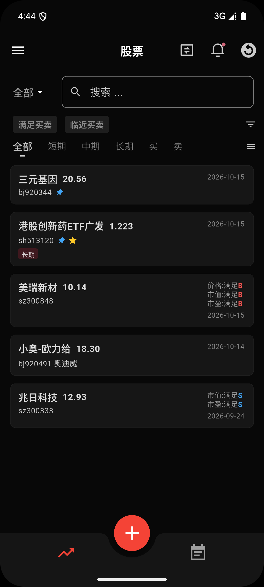
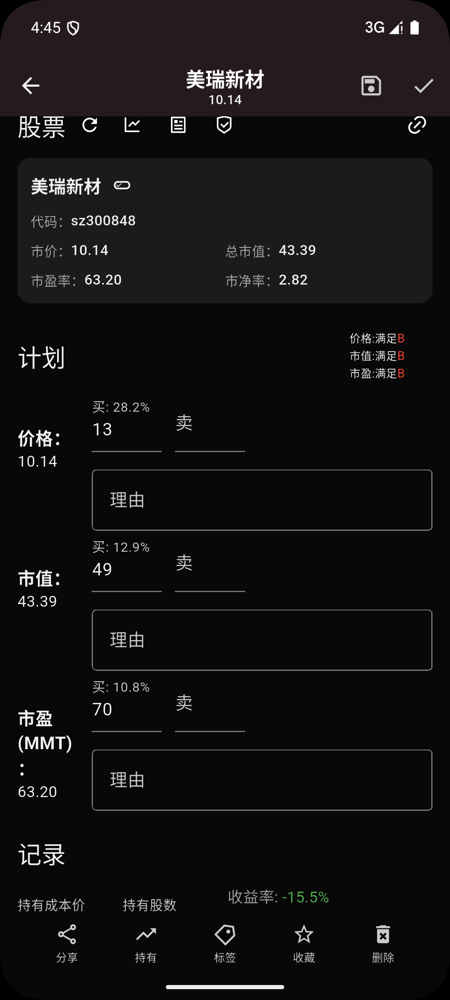
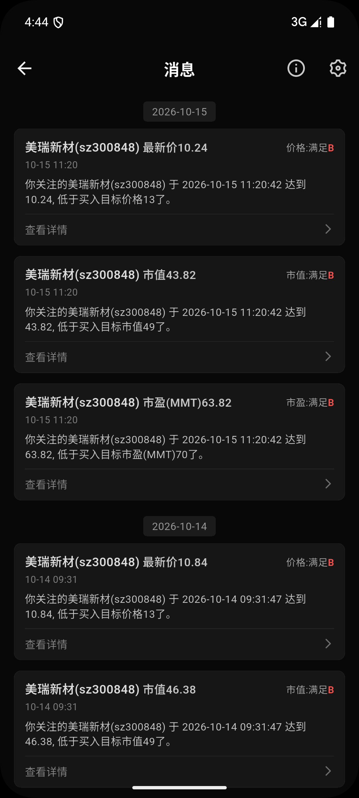
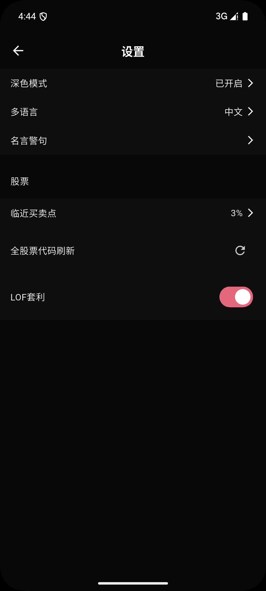
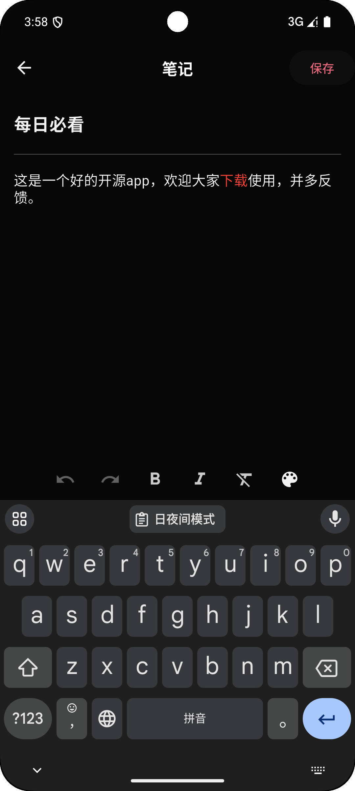
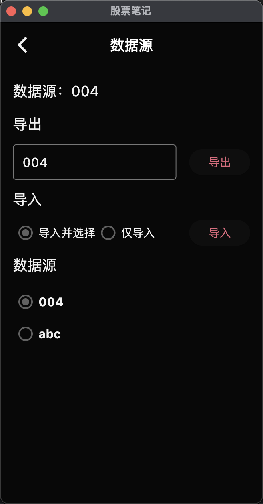
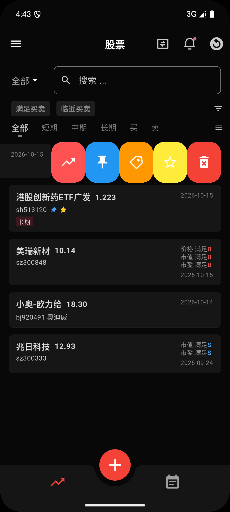
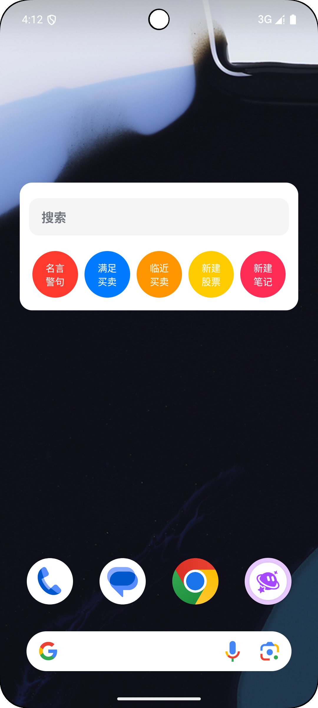

三维买卖计划
价格、市值、市盈率可分别设定买入价与卖出价，实时显示与当前值的差距百分比（如买 1.6%、卖 2.4%），并为每条计划填写独立理由。
买入前写下理由，卖出前定好条件。价格、市值、市盈率任一触达目标， 应用主动提醒你——不靠盯盘，不靠情绪，按你写下的计划执行。

多数亏损来自冲动买入、忘记卖出、事后遗忘。 股票笔记把这三个问题拆解成一条可重复的闭环，让每一次决策都有据可依。
为每只股票分别设定买入价、卖出价，可按价格、市值、市盈率三个维度独立设定。 每一笔计划都要填理由——为什么买、凭什么判断低估。
不用天天盯盘。应用持续比对当前行情与你设定的条件， 满足买入 / 满足卖出 / 临近触发 三种状态实时标记，条件达成主动推送提醒。
每一笔买入、卖出、备注都进交易流水。持有成本价与股数自动计算盈亏， 富文本笔记支持图文与标签，把这次的判断逻辑留下，下次直接复用。
三个月后回看这些记录，你会清楚知道自己哪类判断有效、哪类是情绪。 这才是复盘真正的价值——不是记住赚过钱，而是学会怎么赚。
从计划制定到条件监控，再到记录复盘，全部在同一应用内完成。
价格、市值、市盈率可分别设定买入价与卖出价，实时显示与当前值的差距百分比（如买 1.6%、卖 2.4%），并为每条计划填写独立理由。
按价格、市值、市盈率三维度比对当前行情，「满足买入」「满足卖出」「临近触发」状态实时标记，条件达成即刻推送，不用手动翻盘。
不必等到条件达成才知道。阈值可自定义（±3% 可调），实时显示距离目标还有多远，让你提前判断是否需要调整计划。
每一笔买入 / 卖出 / 备注都留痕，形成完整交易记录。持有成本价与股数辅助盈亏判断，状态支持锁仓、停买、停卖。
富文本全屏笔记支持图文混排、标签归类、关联已记录的股票。把「为什么买」写下来，下次同类机会直接复用。
按标签（短期/中期/长期、买/卖）归类不同策略组合，支持关键词、状态、条件四重过滤。数据可导出为 .db 分享给好友学习。
买卖计划、条件提醒、交易流水、富文本笔记，全部为应用实际运行界面。







免费、开源、无需注册。给交易加一道纪律，比盯盘更重要。
立即下载Android / Windows / macOS 三平台均提供 · 本地存储无需注册
直接下载 Android 版（GitHub Releases）↗